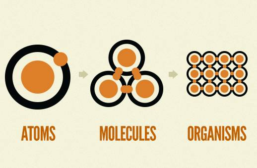

Web Components
Зачем:
Web Components - строительные блоки веба. Компании-разработчики создают Web Components как часть своего проекта (т.к. те могут подключаться к любыми фреймверкам), а также производят компоненты на продажу другим девелоперам.
Что это:
Изолированное, независимое от документа внедрения приложение, легко применяемое и не требующее внешних библиотек.
Web Components
Web Components: эволюция
Atoms: elements of HTML, CSS, JavaScript
Moleculs: web components
Organisms: web applications
Web Components
4 технологии, создающие Web Components
Template
Custom Elements
Shadow Dom
Import HTML
Web Components: <template>
"HTML элемент <template> — это механизм для отложенного рендера клиентского контента, который не отображается во время загрузки, но может быть инициализирован при помощи JavaScript."
Содержимое:
- не рендерится
- не доступно из вне (HTML, JS, CSS не видят id, class и т.п.)
- нет побочных эффектов (скрипты не выполняются, контент не подгружается)
<template> может находится в любом месте html (body, table)
https://developer.mozilla.org/ru/docs/Web/HTML/Element/template
Web Components: актуальность в браузерах.
Web Components: особенности использования <template>
Нет прямого доступа по селектору.
https://www.w3.org/TR/html5/scripting-1.html#the-template-element
Web Components: особенности использования <template>
Атрибут content тега <template>
Web Components: Custom Elements
Ранее в сравнении XML vs HTML можно было встретить: "При помощи XML можно определять собственные наборы тегов и необходимые имена атрибутов."
Custom Elements позволяет делать тоже в HTML
Но для этого потребуется в JavaScript определить наименование, поведение и атрибуты.
Важно соблюдать правила наименования:
1) Имя тега должно быть через дефис
2) Одно имя объвляется один раз
3) Тег должен быть парным
https://developers.google.com/web/fundamentals/getting-started/primers/customelements
Web Components: Custom Elements - наследование элементов.
Можно наследовать любой элемент (в том числе и custom element).
class MyTag extends HTMLElement {
constructor() {
// всегда первым в конструкторе идет этот метод.
super();
// code
}
}
или
class MyButton extends HTMLButtonElement { ...
Web Components: Custom Elements объявление и наименование.
После объявления класса следует зарегестрировать элемент в браузере:
window.customElements.define('my-div', MyTag, {extends: 'div'});
или
window.customElements.define('my-btm', MyButton);
Web Components: Custom Elements
Список методов lifecycle Custom Elements
Эти методы поддерживаются браузерами, определяются в классе и не все обязательны.
- constructor() { super(); /* code */ }
- // вызываются при вставке/удалении в/из DOM)
- connectedCallback() { /* tempate */ }
- disconnectedCallback() { ... }
- // аттрибут изменен (а также добавлен или удален)
- attributeChangedCallback(name, oldVal, newVal) { ... }
- /* перемещение элемента в новый документ document.adoptNode(el)) */
- adoptedCallback() { ... }
Web Components: Custom Elements
Атрибуты: чтобы получать уведомления об изменении атрибутов, при инициализации элемента необходимо определить список наблюдаемых атрибутов, разместив статический атрибут getsAttributes для класса элемента, который возвращает массив имен атрибутов.
- static get observedAttributes() { return ['same_attr']; }
- get same_attr () { ... }
- set same_attr (val ) { ... }
Web Components: поддержка браузеров
Web Components: полифилл и поддержка браузеров
Custom Elements (v1) PolyfillИспользование:
https://github.com/WebComponents/webcomponentsjs
https://www.webcomponents.org/polyfills
bower install --save webcomponents/webcomponentsjs
или
<script src="webcomponents-lite.min.js"></script>

Web Components: Shadow Dom
Включаем просмотр в браузере Chrome: Ctrl+Shift+I => F1
Web Components
Shadow Dom стандартно используется в браузерах
Web Components: Shadow Dom - это инкапслуяция
Web Components: Shadow Dom - это инкапслуяция
Web Components: import
Требуется сервер http, Chrome (или полифилл для других браузеров)
Web Components: import
Требуется сервер http, Chrome (или полифилл для других браузеров)
Web Components: пример нативной реализации
Web Components: пример нативной реализации
Web Components
Web Components: Poliner - проект Google
Требуется: git, node + npm<est + bower
npm install npm@latest -g
npm install -g bower
npm install -g polymer-cli@next
polymer init
// выбрать тип элемента или приложения
polymer serve